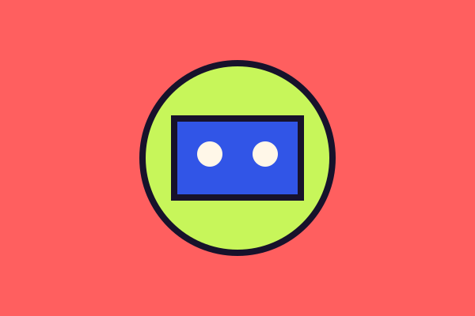

← Back to projects
Project 01 / autonomy lab
Lander Pro
A reinforcement-learning project training an agent to land safely in Gymnasium's LunarLander environment.

learn / steer / landThe build
Teaching a machine to trust its instruments.
Lander Pro uses a Deep Q-Network to learn control through repeated simulation. The agent reads the lander's state, chooses an action, and gradually improves its flight through reward and feedback.
Everything needed to explore the experiment is available below, from the training script to the environment dependencies and license.